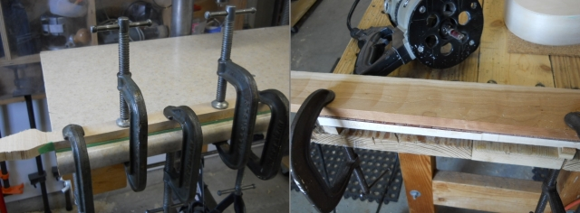
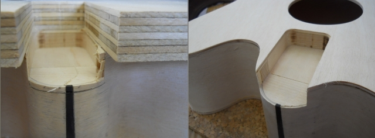

Select your area of interest:
Home* Lap Steel* 3 String Guitar* "Regular" Guitar* Violin* Bass*Banjo* Mandolin* Ukulele* Home Recording* Links
Bluestem Three String Guitar

Introduction
Every once in a while I like to indulge in the "just for fun" side of making musical instruments. With that in mind I found myself examining two issues related to instrument building simultaneously with this project.1. What instrument would satisfy the requirements of being easy to make, easy to learn, and easy to play?
2. What type of project could serve as a stepping stone to assist someone interested in building instruments to progress beyond the "attach-stick-to-cigar-box" level?
What I wished to do was to find a way to introduce some of the techniques commonly used for fretted instrument construction, but WITHOUT the need for expensive materials and complex construction methods requiring tooling beyond what is found in the average home shop. This nylon-strung 22" scale three string guitar meets all of those prerequisites admirably.
Bluestem Three String Guitar
Designed to play exactly like the first three strings of it's full size namesake, this 22" short scale nylon-strung three string guitar can serve as an ideal travel-size alternative to a standard size instrument, an ideal "pick-up-and-play-during-commercials" beside the easy chair instrument, or serving as an ideal way to introduce children to the joys of playing a musical instrument.If you enjoy composing original tunes or songs you'll find that picking up an instrument with a tuning or configuration other than what you normally play can also serve as a catalyst for fresh ideas if you occasionally lack inspiration.
Modeled after the standard guitar, the skills developed while learning to play the three string guitar will transfer directly to its full size counterpart. In fact, all of the standard learning aids such as tablature and chord charts can be immediately used for the three string guitar by using only the portion relating to the first three strings of a standard instrument. The three string guitar can be tuned identically to the first three strings of a standard guitar; 3rd string (G), 2nd string (B), and 1st string (E).
No one trick pony, the three string guitar readily adapts to open chords and that's when things really start to get fun for the more seasoned musician. Don't discount the fun factor of this diminutive beauty! More later on alternate tunings.
Classical guitar strings are used, and can be purchased from on-line retailers such as StringsByMail.com as a "treble set" composed of only the first three strings. An added advantage for the three string guitar, these treble sets are often sold in advanced formulations such as fluorocarbon which result in brighter and clearer tone than traditional nylon material. These treble sets are also available in soft, medium, and hard tensions. This doesn't mean they are easier or harder to play; it relates to the amount of tactile feel under the fingers. Medium or soft will suit most players, although since we are using a shorter 22" scale length the hard formulation will feel a bit more familiar to those who already play an instrument.
Bluestem Three String Guitar Plan (FREE shipping) is $14 within the U.S. and $18 outside of the U.S.

Bluestem Three String Guitar Construction Photos
Here are a few photos taken during construction to provide a bit more information about the construction process. I'll be adding descriptive text to the photos as I get time.Body pattern and construction form. The form is split and uses two countertop joint connecters to fasten the halves together.

Top left: My bending rig.
Top right: Sides bent, top and bottom block added.
Bottom left: The band saw is fitted with a stop block to produce the kerfed lining strips.
Bottom Right: Contrasting wood wedges are inlaid and trimmed flush at both end joints for the sides.

Top left: Sides have been glued to top.
Top right: Marking the top 1/8" from the sides. The top of the marking jig where the pencil is held is cut 1/8" shorter than the finger that rides on side.
Bottom left: Cuts are made tangential to the marked line and the shape is band sawn to remove most of the excess overhanging material.
Bottom right: A bearing guided carbide router bit is used to flush cut the top to the sides. A "climb cut" is used so there is no splintering or chip out of the top's edge.

Top left: The bridge plate is glued to the underside of the top BEFORE the back is glued on!
Top right: The neck blank is built up as necessary and the headstock layout lines are added.

Top left: Planing the headstock back angle with a Wagner Safe-T-Planer.
Top right: Drilling the recess for the tee nut flanges with a 3/4" Forstner bit.
Bottom left: The 19/32" clearance holes for the tee nut body are drilled in the neck.
Bottom right: The tee nut prongs are trimmed to remove about 1/2 of their length; excessive length is not necessary.

Top left: The neck is glued to the fretboard blank with 1 hour clear epoxy. A non-water based adhesive is best since there's no neck reinforcement used.
Top right: The fretboard and neck are routed with a bearing-guided carbide flush cut bit to precisely cut the side profile of the neck.

Top left: A straightedge is used to accurately match the neck and body centerlines.
Top right: The neck is held at the correct position and the neck heel is traced on the top.
Bottom left: The neck heel is traced on 3/4" plywood and carefully cut out to make a template for accurately routing the neck pocket.
Bottom right: The front of the pocket is laid out on the body and the entire neck pocket is scored with a sharp hobby knife to minimize the chance for tear out or splintering.

Top left: The neck pocket is routed in 1/8" steps using a bearing guided flush trim bit until the proper depth is reached.
Top right: The completed neck pocket.

Top left:
Top right: The Wagner Safe-T-Planer is used to plane the rear of the headstock down to its final thickness.
Bottom left: The neck is marked to indicate waste areas that will be removed with the band saw.
Bottom right: The band saw is used at a 30 degree angle to remove excess neck wood.

Top left: A vertical oscillating spindle sander is used to refine the curved headstock profile.
Top right: The neck is profiled using the 4 steps outlined on the construction print.
Bottom left: A momentary foot switch is used to pulse the 5" random orbit sander for ultra-fine control of the neck sanding process.
Bottom right: Drilling the holes for the tuners. The guide block and solid backer board will ensure clean and tear out-free holes.

Top left: The frets are installed and edges finished. (There are fretting instructions commonly available on the internet.)
Top right: Checking for proper clearance over the top where the bridge will be located, 3/8" in this example photo.
Bottom left: Light pencil lines are made at the bridge location by extending the side lines of the fretboard to assist with centering the bridge correctly.
Bottom right: The bridge saddle slot is cut in the bridge blank. A small router setup is shown being used here.

Top left: The neck is joined to the top in preparation for preliminary assembly and stringing.
Top right: The bridge is precisely located and 1/16" string holes are drilled through the top and bridge plate. The tuners and string spacer are added, and the instrument is strung for the first time to check all of the alignment details. This design is great, because the strings will actually hold the bridge in its proper position BEFORE gluing it permanently to the top.
Bottom left: Here is a shot of the inside of the instrument showing the Ashley stopper knots lodged firmly against the bridge plate. How to properly tie them is detailed on the construction print.
Bottom right: Once the instrument has been un-strung the neck is removed and the finishing work is done. The bridge is located using two 1/16" drill bits and tape is temporarily placed around the outside edges of the bridge. The bridge is removed and a clear "mask" about 1/8" smaller than the bridge is made from packing tape and applied to the top. This allows staining and finish application and is carefully peeled away when it's time to glue the bridge on the top.

Top left: Two 1/16" drill bits are used as alignment pins and the bridge is glued and clamped in place. Two cheap Harbor Freight deep clamps do the job nicely here.
Top right: The instrument is strung by pushing the string down through the bridge until a fair amount of length can be pulled through the sound hole. A small bead (Wal-mart variety here...) is slid on the string BEFORE the knot is tied if it is desired to use them. The beads will prevent the knot from eventually enlarging a hole in the bridge plate, but this would most likely take years and many string changes to happen. Use 'em if you got 'em!